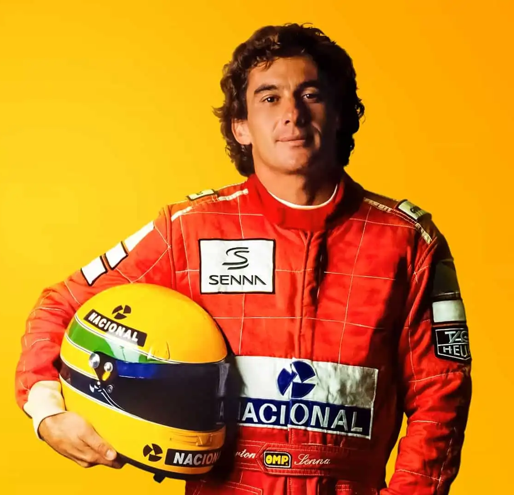
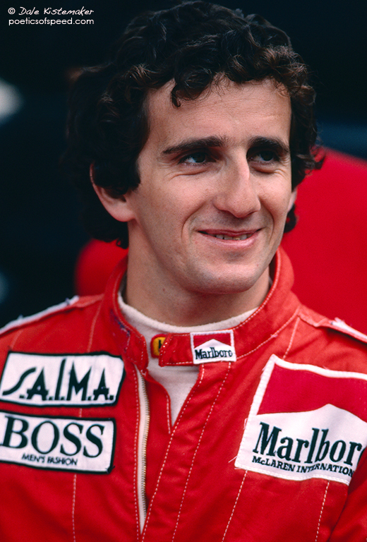
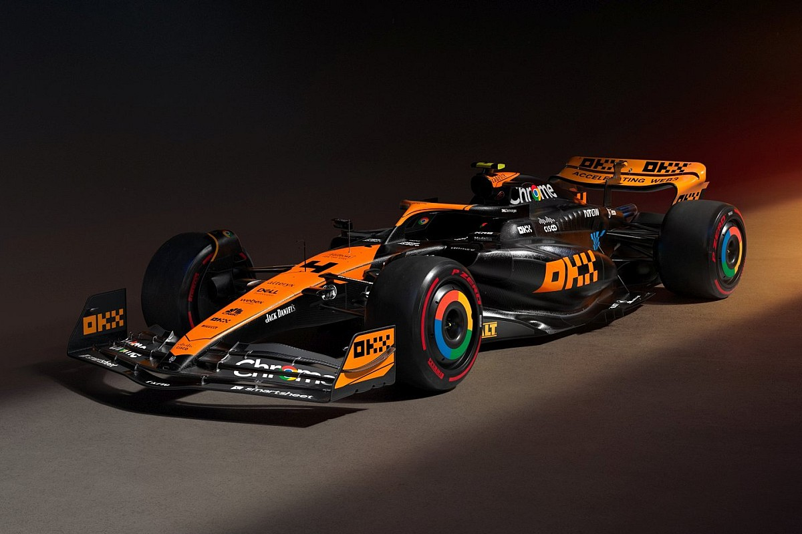
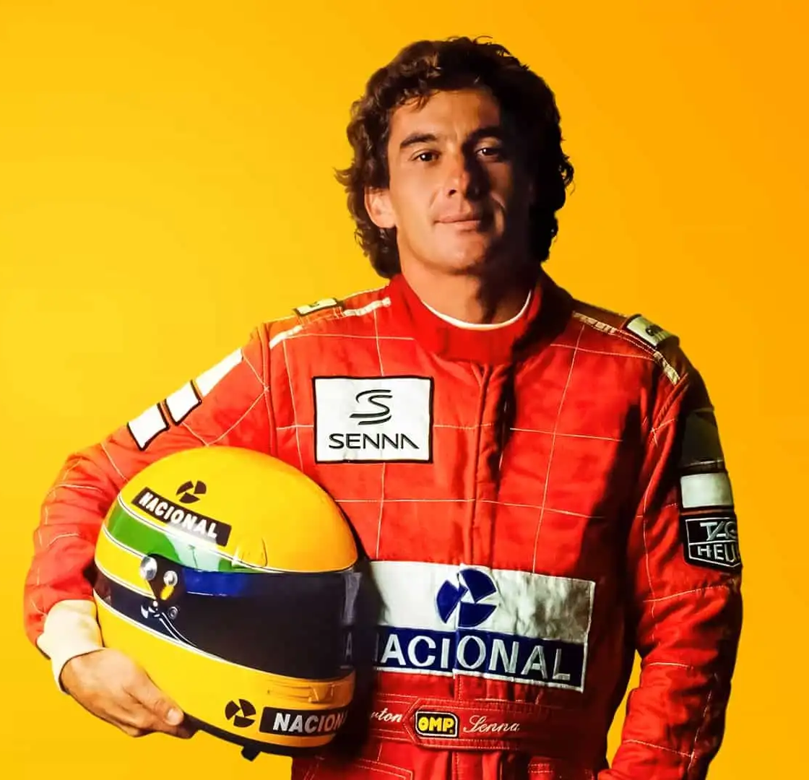
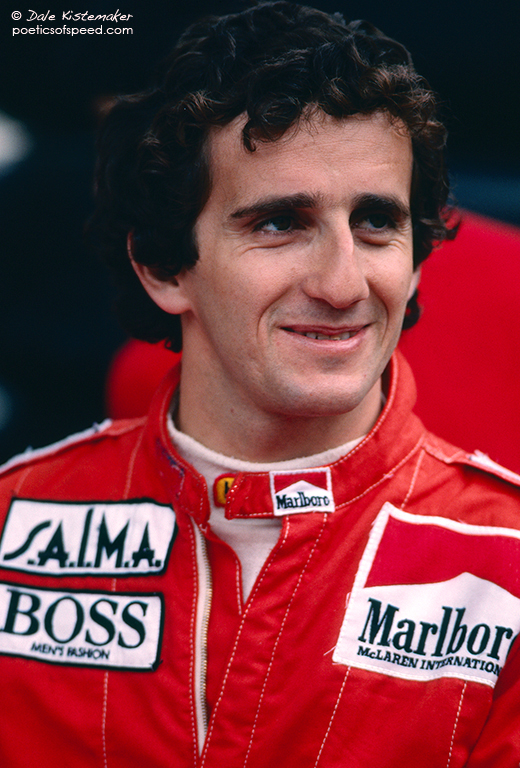

Гонщики McLaren
В истории команды выступали такие известные гонщики, как Ayrton Senna, Alain Prost и многие другие. Сейчас в составе команды выступают Lando Norris и Oscar Piastri
 

Команда McLaren в Формуле 1 была основана в 1966 году. Она достигла успеха в 1970-х годах с пилотами Эмерсоном Фиттипальди и Джеймсом Хантом, а также в 1980-х благодаря Ники Лауде и Алену Просту. В последние десятилетия McLaren оставалась сильной командой, с Льюисом Хэмилтоном, выигравшим чемпионат в 2008 году, и продолжает участвовать в Формуле 1.
В истории команды выступали такие известные гонщики, как Ayrton Senna, Alain Prost и многие другие. Сейчас в составе команды выступают Lando Norris и Oscar Piastri
 